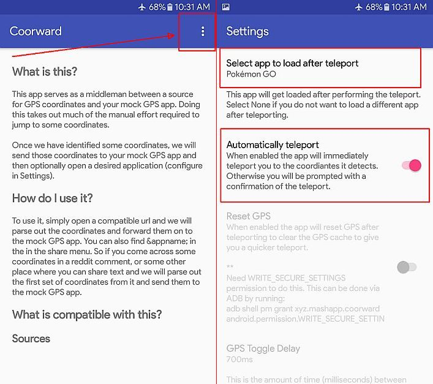

Coorward
Open coordinates links and automatically forwards GPS coordinates to GPS mocking app.
Supported GPS mocking app/s:
Latest GPS JoyStick ((appninjas) v4.1.2
How to set-up:
- Download/ install app below. -enable location permission: settings> apps> coorward> permission
- Run app> tap SETTINGS (scroll down) or 3dots menu (upper right), tap select app to load after teleport (select POKEMON GO), enable automatically teleport, close app. 
- Run gps joystick (just use any coords). -enable location permission: settings> apps> urgpsjoystick> permission
- Open discord app, go to pokedex100> 100community channel> click community coords link> open with: select Coorward > log-in to discord> authenticate> click community coords link again.
- will show the coords page for a seconds with a warning "2 hrs cooldown" on screen.
- will auto open pokemon go as it was already set in coorward or it will switch if it's already opened.
- Just switch between discord (to get coords) and pogo or use split screen.
click image to enlarge

click image to enlarge

click image to enlarge
NOTE:
It won't work if you have more than one gps joystick installed.